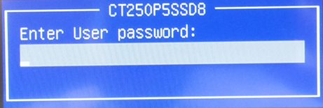
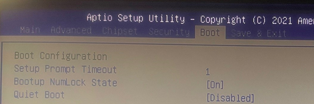
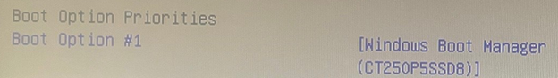
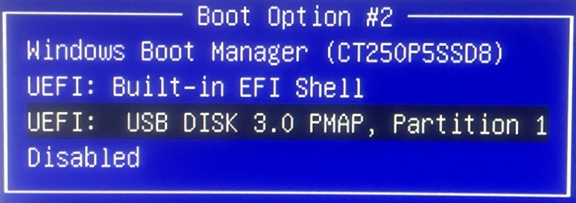
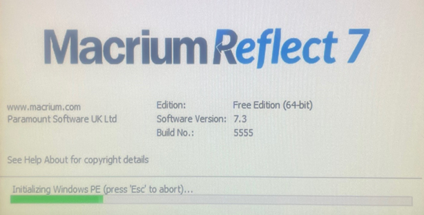
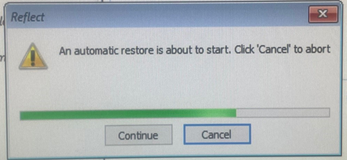
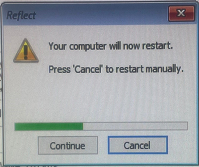

Re-image Windows 10 Console PC
This procedure describes how to re-image the Windows 10 "Mini" Console PC.
Perform this procedure when re-imaging the Windows 10 console PC.
-
Make an immediate backup if the user interface is available. If the user interface is not available, make sure that a backup or copy of the database is available on the USB [E:]Backupdrive drive.
Note: The re-image process erases all information on the PC hard drive. A backup or copy of the database is required to restore the database.
-
Insert Windows 10 re-image flash drive into an available USB 3.0 (blue) port and restart the PC to access the system BIOS.
-
Enter security password "Access2Admin" when prompted to launch Windows.

- After entering the password, immediately press the Delete key to enter the system BIOS.
-
Change the device boot order in the BIOS utility.
- Use the Left / Right arrow keys to navigate to the
Boot tab.

- Use the Up / Down arrow keys to highlight
Boot Option #1 and select
Enter.

- Use the Up / Down arrow keys to highlight
UEFI: USB DISK 3.0 PMAP, Partition 1 and then
Enter to select it.

- Use the Left / Right arrow keys to navigate to the
Boot tab.
- Select F4 then Yes to save and exit the BIOS. The PC will reboot.
-
Enter security password "Access2Admin" when prompted to launch Windows.
-
The re-image process will start automatically after the PC finishes booting.

-
The re-image process will complete without any intervention required followed by the PC rebooting automatically.
Note: Press Escape when prompted to abort the re-image if necessary.

-
The re-image process will complete and the PC reboots automatically.

-
The re-image process will complete without any intervention required followed by the PC rebooting automatically.
-
Enter security password "Access2Admin" when prompted to launch Windows.
- After entering the password, immediately press the Delete key to enter the system BIOS.
-
Change the device boot order in the BIOS utility.
- Use the Left / Right arrow keys to navigate to the Boot tab.
- Use the Up / Down arrow keys to highlight Boot Option #1 and select Enter.
- Use the Up / Down arrow keys to highlight Windows Boot Manager (CT250P5SSD8) and then Enter to select it.
- Select F4 then Yes to save and exit the BIOS. The PC will reboot.
- Remove the Windows 10 re-image flash drive.
- Load system software and then restore the database. Refer to the Restoring PC Using Immediate Backup (Access2) or Restoring PC Using Previous Backup (Access 2) procedures for details.